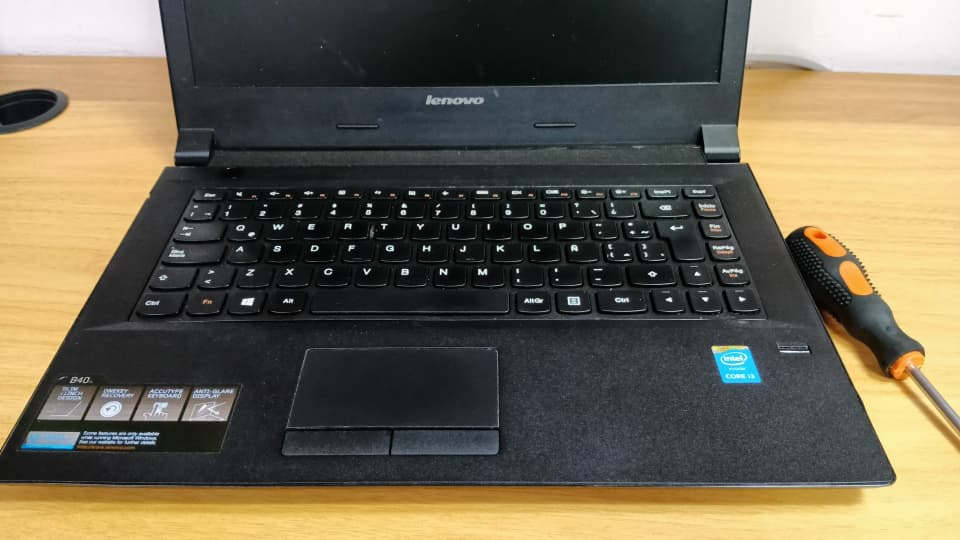
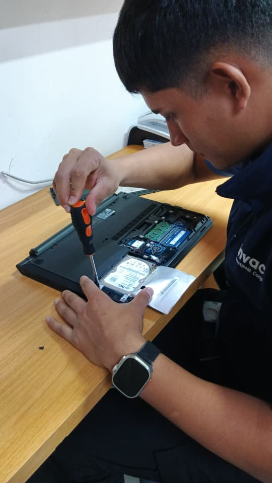
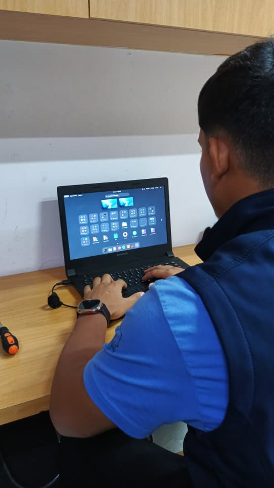
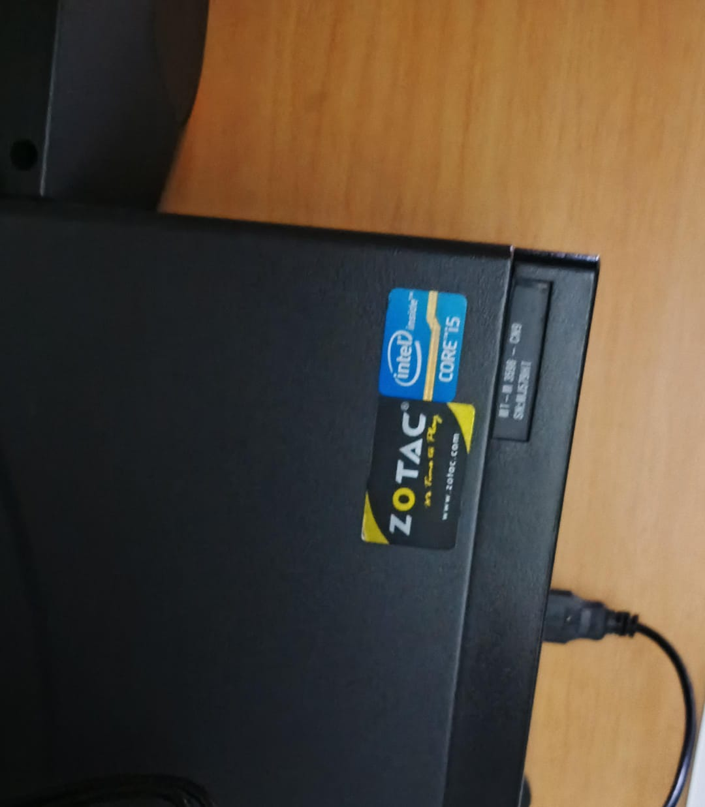
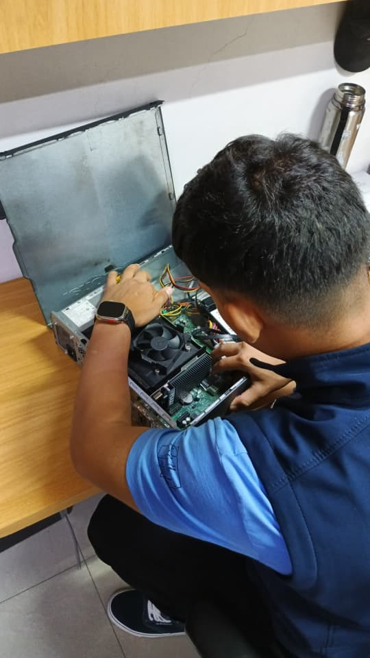
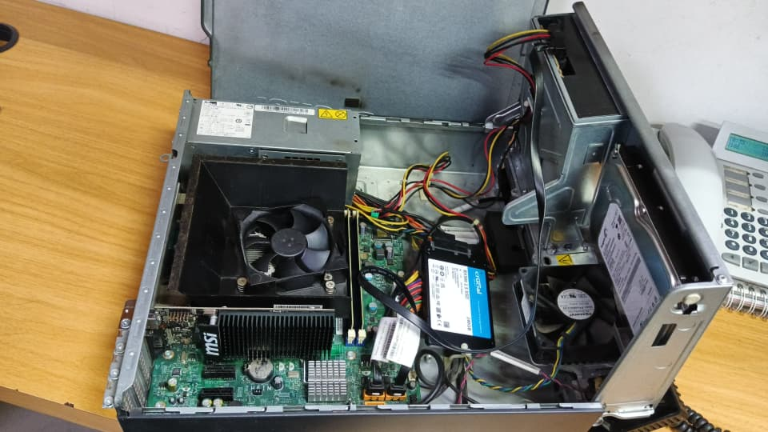
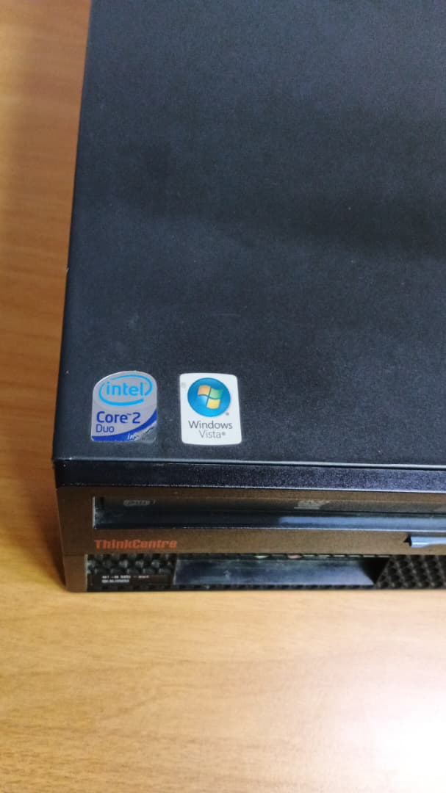
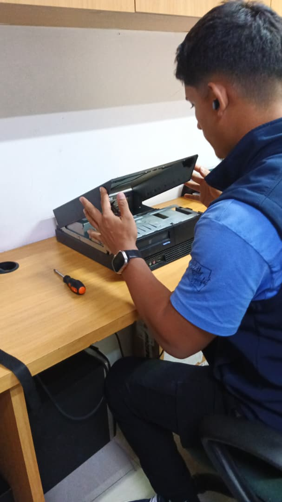
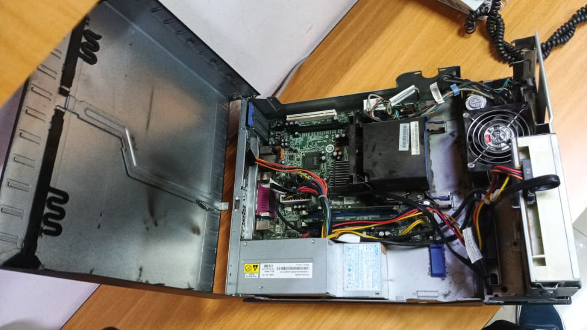

Revisión a nivel de software de tres computadores diferentes, comparativa de características técnicas y tipo de zócalo, recomendaciones de uso y cuidado, y registro fotográfico por equipo.
Información técnica verificada a nivel de software (CPU-Z / Información del Sistema) en tres equipos distintos.
| Equipo | Marca y Modelo | Generación | Tipo de Zócalo | Otras Características Técnicas |
|---|---|---|---|---|
| Equipo 1 | Intel Core i5 (Equipo Portátil / Verificado por software) |
Generación Intel Core i5 (Arquitectura x86-64) | Socket / BGA según placa base | Múltiples núcleos e hilos con soporte de virtualización y ejecución de instrucciones en paralelo, caché multinivel y control térmico dinámico. |
| Equipo 2 | Intel Core i7 (Equipo de Escritorio / Torre) |
Generación Intel Core i7 (Arquitectura x86-64) | Zócalo LGA / Plataforma de escritorio | Alto rendimiento multitarea, soporte para caché L3 amplia, ejecución fuera de orden y disipación térmica activa mediante disipador y ventilador. |
| Equipo 3 | Intel Core 2 Duo (PC Lenovo ThinkCentre) |
Arquitectura Intel Core (65 nm / 45 nm) | LGA 775 | 2 núcleos / 2 hilos, caché L2 compartida, bus frontal (FSB) y chasis de escritorio compacto. Ideal para ofimática ligera y diagnóstico básico. |
Registro fotográfico del estudiante con cada equipo evaluado, revisión interna/periférica y verificación del entorno operativo.

Vista general del Equipo 1.

Inspección y manipulación técnica del equipo.

Verificación del sistema y diagnóstico en equipo.

Identificación externa del Equipo 2.

Revisión de componentes internos y refrigeración.

Vista interna de placa base, disipador y conexiones.

Chasis Lenovo ThinkCentre e identificación del procesador.

Apertura y evaluación física del gabinete.

Distribución interna de hardware en formato compacto.
Estudiante: Zambrano Avendaño, Oscar Yván | C.I.: V-31.269.474 | Fecha de publicación: 2026-11-23
Competencia técnica consolidada: Identifiqué y comparé procesadores de distintos equipos a nivel de software y estructura física, reconociendo cómo cambian los zócalos, el caché, el consumo energético y la disipación térmica entre arquitecturas.
Obstáculo encontrado y criterio de resolución: Contrastar equipos de distintas épocas y formatos (portátil, torre y chasis compacto) exige verificar datos exactos sin confundir modelos ni zócalos; lo resolví cruzando la información visual/física de cada equipo con su identificación técnica y manteniendo medidas preventivas adecuadas a cada diseño.
Aplicación profesional en TI: En soporte técnico e inventario de infraestructura, auditar correctamente la CPU y el zócalo evita compras incompatibles de repuestos, previene fallas térmicas por falta de mantenimiento y permite asignar cada equipo a cargas de trabajo acordes a su capacidad real.